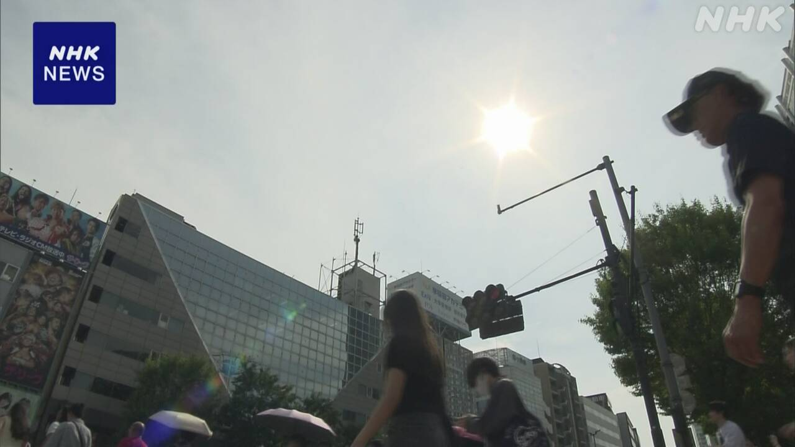

最新ニュース
1️⃣ 静岡県などで40℃以上の「酷暑日」 41.1℃になった所も
23
日も、
とても暑くなりました。
危険な暑さが
続いています。
静岡県浜松市佐久間では、41.1℃になりました。今年、一番暑くなりました。
岐阜県、愛知県、三重県でも40℃以上の「酷暑日」になった所がありました。
24日は、関東地方から沖縄までの30の県などに、熱中症の危険を知らせる「熱中症警戒アラート」が出ています。
気象庁によると、関東地方と山梨県、長野県、そして山形県、宮城県、福島県では、天気が変わりやすくなっています。
特に関東地方では23日の夜、急に強い雨が降りそうです。
低いところに水が入ったり川の水が増えたりするかもしれません。気をつけてください。
静岡県浜松市佐久間では、41.1℃に
なりました。
今年、
一番暑くなりました。
岐阜県、愛知県、三重県でも40℃以上の「酷暑日」になった所がありました。
24日は、関東地方から沖縄までの30の県などに、熱中症の危険を知らせる「熱中症警戒アラート」が出ています。
気象庁によると、関東地方と山梨県、長野県、そして山形県、宮城県、福島県では、天気が変わりやすくなっています。
特に関東地方では23日の夜、急に強い雨が降りそうです。
低いところに水が入ったり川の水が増えたりするかもしれません。気をつけてください。
岐阜県、愛知県、三重県でも40℃以上の「酷暑日」になった所がありました。
24日は、関東地方から沖縄までの30の県などに、熱中症の危険を知らせる「熱中症警戒アラート」が出ています。
気象庁によると、関東地方と山梨県、長野県、そして山形県、宮城県、福島県では、天気が変わりやすくなっています。
特に関東地方では23日の夜、急に強い雨が降りそうです。
低いところに水が入ったり川の水が増えたりするかもしれません。気をつけてください。
2️⃣ 熱中症に気をつけて 1週間で1万人が病院に運ばれた

日本のいろいろなところで熱中症になる人が増えています。
総務省消防庁によると、7月19日までの1週間に、熱中症で病院に運ばれた人は1万人以上でした。
前の週の2倍以上で、すごく増えています。
病院に運ばれた人の中で、14人が亡くなりました。6700人ぐらいが65歳以上の人でした。
エアコンを使って涼しくしてください。のどが乾いていなくても、水を飲んでください。
外で仕事をするときは、何回も休むようにしてください。
3️⃣ ウクライナ 文化財を攻撃から守るカバーを取る作業が始まった
ロシアの攻撃が続いているウクライナのニュースです。
ウクライナでは、古くて大切な、建物や石の像などの文化財を、木や鉄の板でカバーをしました。ロシアの攻撃から守るためです。
しかし、戦いが長く続いて、板でカバーをした石の像の色などが、温度や湿度で悪くなる心配が出てきました。
このためキーウ市は、一部の文化財のカバーを取る作業を始めました。
キーウ市では、今までに200以上の文化財が、攻撃で壊れました。
市は、カバーがあっても攻撃から守ることは難しいと考えています。
そして、文化や歴史を知ってもらうために、文化財を見せることも大切だと考えています。
4️⃣ 松江城の周りを回る船に「風鈴」 涼しく感じてほしい
島根県の松江城では、城の周りのお堀を船に乗って楽しむことができます。
船は、毎年夏に、涼しく感じてもらうために「風鈴」をつけています。風鈴は、風が吹くときれいな音がなる鈴です。
今年は、21日から始まりました。旅行に来た人たちは、風鈴の音を聞きながら、昔の家が見える景色を楽しんでいました。
岡山県の男性は「風鈴の音を聞いて夏が始まったと感じました」と話していました。
この風鈴の船は、8月の終わりまでの予定です。
- 〜ても / 〜でも
- 〜ている / 〜でいる
- 〜になる
- 〜以上
- 〜ところ
- 〜がある / 〜がいる
- 〜から〜まで
- 〜から
- 使役 (〜させる / 〜せる)
- 〜まで
- 〜など
- 〜やすい
- 〜によると
- 〜そうだ
- 〜かもしれない / 〜かもしれません
- 〜たり〜たりする
- 〜てください / 〜でください
- 〜中
- 〜くらい / 〜ぐらい
- 〜なくて
- 〜ようにする
- 〜ように
- 〜や〜など
- 〜ため
- 〜までに
- 〜こと
- 〜てもらう / 〜でもらう
- 〜ため(に)
- 〜ことができる
- 〜ながら
- 〜予定だ
- 〜予定
vebaev.github.io
Generated: 2026-07-23 14:03:25 UTC